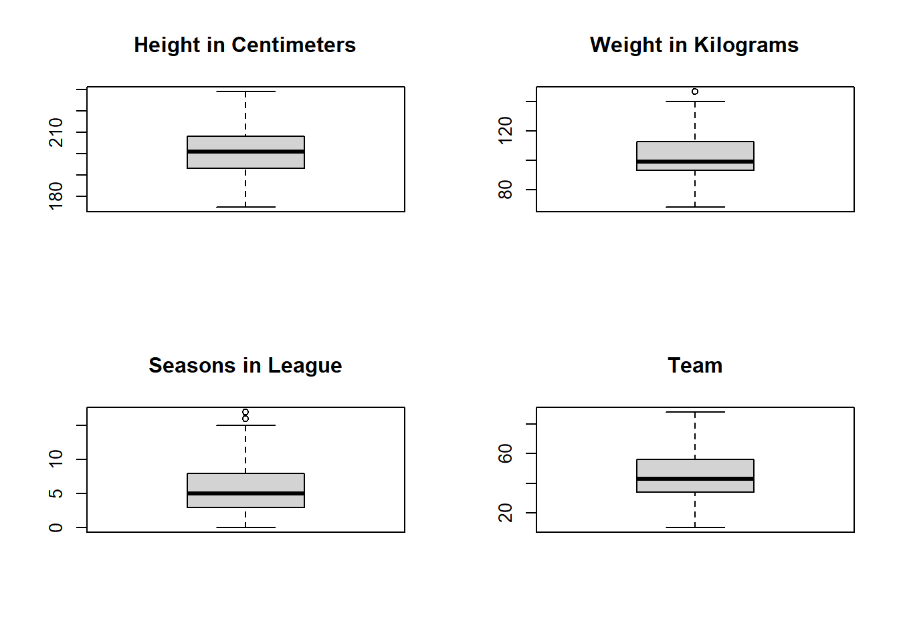
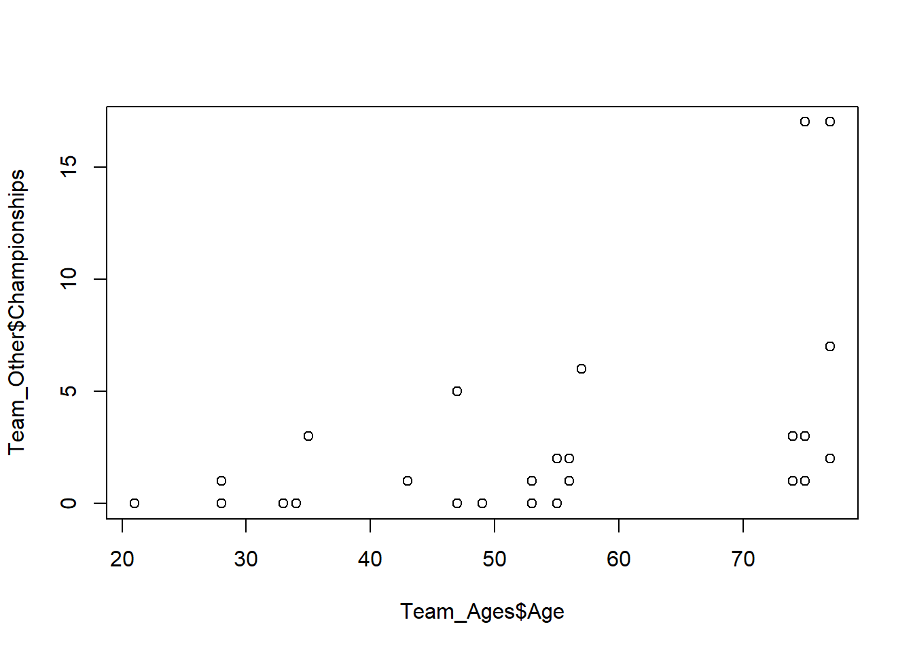

This project aims to explore the relationship between age and success in the NBA as measured by building and comparing various models of how many times a given player or a given age range of players have been awarded the NBA’s Player of the Week award. This initial study can then be extended, using additional data sources on remaining contract length, to model the contract year effect, in which players are purported to put forth more effort and thereby produce better results in the final year of their contract with the goal of negotiating a better one the following season. While this is a small-scale study, the use of Player of the Week as the award of interest as opposed to a more prestigious end-of-season award like Most Valuable Player or even Sixth Man of the Year yields more data that allows for more rigorous analysis. Finally, this project looks to find if there is a relationship between the length of time a franchise has existed and the number of Players of the Week the franchise has had.
Data
Data import
This Player of the Week dataset comes from Kaggle user Jacob Baruch, and includes data on players heights, weights, ages, and number of seasons in the NBA for all Player of the Week award winners from the 1979-1980 season through the 2019-2020 season, up to March 9th before the COVID-19 virus caused a change in the regular season schedule. The Team Ages, Champs, and Team_Other datasets come from the NBA official website.
Data preparation (tidying/engineering)
The data tidying process began with correcting outdated team names to their current counterparts using the replace function, as teams had moved cities or changed mascot names. Next inconsistent positions titles were changed to the traditional center, power forward, small forward, shooting guard, and point guard delineations. Finally, the conference column was fixed en masse, as there were numerous errors and inconsistencies, such as multiple instances of the Los Angeles Clippers being labeled as part of the Eastern Conference.
Data summarization
par(mfrow =c(2,2))boxplot(PotW_Data$`Height CM`, main="Height in Centimeters")boxplot(PotW_Data$`Weight KG`, main="Weight in Kilograms")boxplot(PotW_Data$`Seasons in league`, main="Seasons in League")boxplot(table(PotW_Data$Team), main="Team")

Data visualization
plot(Team_Ages$Age, Team_Other$Championships)

plot(Team_Ages$Age, Team_Ages$PotW_Count)
Warning: Unknown or uninitialised column: `PotW_Count`.
PotW_Titles<-glm(`Title Season`~`Seasons in league`+`Height CM`+`Weight KG`+East, data=PotW_Data)Number_PotW<-lm(Team_Ages$PotW_Count~Team_Ages$Age)Number_Titles<-lm(Team_Other$Championships~Team_Ages$Age+Team_Ages$PotW_Count)summary(PotW_Titles)
Call:
glm(formula = `Title Season` ~ `Seasons in league` + `Height CM` +
`Weight KG` + East, data = PotW_Data)
Deviance Residuals:
Min 1Q Median 3Q Max
-0.32030 -0.12044 -0.07387 -0.02485 1.02146
Coefficients:
Estimate Std. Error t value Pr(>|t|)
(Intercept) -2.261e-01 2.178e-01 -1.038 0.2995
`Seasons in league` 1.800e-02 2.341e-03 7.688 2.87e-14 ***
`Height CM` 6.431e-06 1.438e-03 0.004 0.9964
`Weight KG` 2.116e-03 9.631e-04 2.197 0.0282 *
East -1.865e-03 1.548e-02 -0.120 0.9041
---
Signif. codes: 0 '***' 0.001 '**' 0.01 '*' 0.05 '.' 0.1 ' ' 1
(Dispersion parameter for gaussian family taken to be 0.07938843)
Null deviance: 112.56 on 1343 degrees of freedom
Residual deviance: 106.30 on 1339 degrees of freedom
AIC: 416.2
Number of Fisher Scoring iterations: 2
summary(Number_PotW)
Call:
lm(formula = Team_Ages$PotW_Count ~ Team_Ages$Age)
Residuals:
Min 1Q Median 3Q Max
-25.288 -11.359 -2.236 9.275 34.994
Coefficients:
Estimate Std. Error t value Pr(>|t|)
(Intercept) 24.7323 9.7783 2.529 0.0173 *
Team_Ages$Age 0.3770 0.1755 2.149 0.0405 *
---
Signif. codes: 0 '***' 0.001 '**' 0.01 '*' 0.05 '.' 0.1 ' ' 1
Residual standard error: 15.85 on 28 degrees of freedom
Multiple R-squared: 0.1415, Adjusted R-squared: 0.1109
F-statistic: 4.616 on 1 and 28 DF, p-value: 0.04046
summary(Number_Titles)
Call:
lm(formula = Team_Other$Championships ~ Team_Ages$Age + Team_Ages$PotW_Count)
Residuals:
Min 1Q Median 3Q Max
-4.580 -1.999 -0.814 1.177 11.008
Coefficients:
Estimate Std. Error t value Pr(>|t|)
(Intercept) -7.20731 2.36415 -3.049 0.0051 **
Team_Ages$Age 0.09157 0.04131 2.217 0.0352 *
Team_Ages$PotW_Count 0.10787 0.04122 2.617 0.0144 *
---
Signif. codes: 0 '***' 0.001 '**' 0.01 '*' 0.05 '.' 0.1 ' ' 1
Residual standard error: 3.458 on 27 degrees of freedom
Multiple R-squared: 0.4103, Adjusted R-squared: 0.3666
F-statistic: 9.392 on 2 and 27 DF, p-value: 0.0008011
Evaluation - Discussion of what you saw/did
The unfortunate conclusion is that these models are, by and large, not very good. With the best R-Squared of the two linear models being only 0.41, it would suggest that the data in these sets is not very useful for modeling a team’s ability to win a championship, with one exception. The Seasons in League variable for the Players of the Week data was extremely significant in the general linear model explaining title odds, so what that would potentially suggest is that teams with skilled veteran players have a better shot at an NBA championship, which makes sense in context, and can be useful for explaining the rationale of general managers who seek out older players with good reputations as free agents if they already have a team that is in playoff contention. Going forward, explaining the contract year effect would require a completely different dataset, as contracts are required to measure a potential increase in salaries to see if that phenomenon exists. Player performance statistics would also be useful for the other models, as the predictors the datasets provided were not particularly significant explanatory variables.